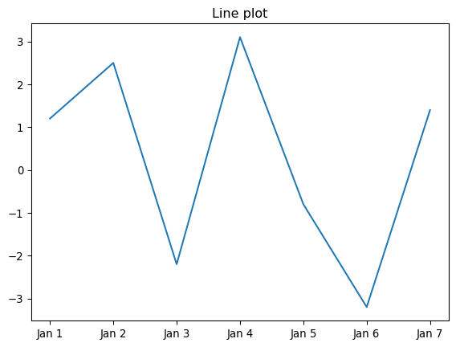
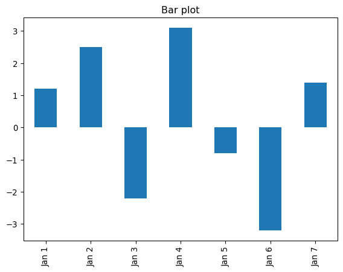
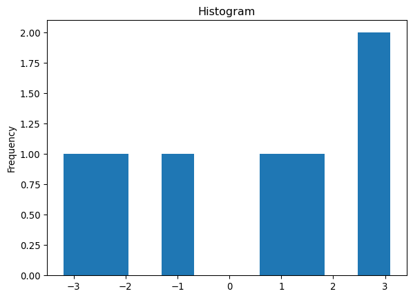
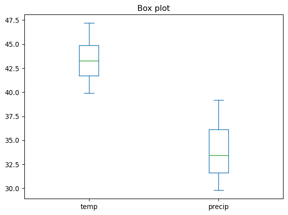
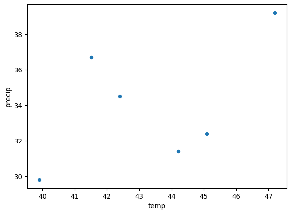

import numpy as np
import pandas as pd6 Pandas
6.1 Overview
Often, data cannot be used directly for your analysis. For accurate, meaningful outcomes, data have to be prepared, prior to the application of data mining tools.
“This session offers a guide on handling data in R, focusing on common formats like CSV and Excel. It covers importing data from local files and online data, inspecting data, and exporting data. Also, it includes an introduction to the tibble format from the tidyverse for more advanced data handling.”
The following tutorial contains examples of using the numpy and pandas library modules. The notebook can be downloaded from http://www.cse.msu.edu/~ptan/dmbook/tutorials/tutorial2/tutorial2.ipynb. Read the step-by-step instructions below carefully. To execute the code, click on the cell and press the SHIFT-ENTER keys simultaneously.
6.1.0.1 Packages for this section
6.2 Pandas
Pandas is a Python package that provides powerful and flexible data structures for data analysis and manipulation. Particularly, two main structures, Series and DataFrame, in Pandas are designed to make working with structured data intuitive and efficient.
Series is a one-dimensional labeled array capable of holding data of any type (integers, strings, Python objects, etc.), and DataFrame is a two-dimensional labeled array (i.e., matrix) with columns of potentially different types.
6.2.1 Series
A Series object consists of a one-dimensional array (i.e., vector) of values, whose elements can be referenced using an index array.
You can create a Series object from a list, a numpy array, or a Python dictionary. For example, the following shows how to create a Series object with a list.
import pandas as pd
list_data = [3.1, 2.4, -1.7, 0.2, -2.9, 4.5]
sr = pd.Series(list_data) # creating a series from a list
print('sr =\n', sr, '\n', sep="")
print('sr.values =', sr.values) # display values of the Series
print('sr.index =', sr.index) # display indices of the Series
print('sr.dtype =', sr.dtype) # display the element type of the Seriessr =
0 3.1
1 2.4
2 -1.7
3 0.2
4 -2.9
5 4.5
dtype: float64
sr.values = [ 3.1 2.4 -1.7 0.2 -2.9 4.5]
sr.index = RangeIndex(start=0, stop=6, step=1)
sr.dtype = float64Each element in a Series is automatically labeled with numeric indices in an ascending order, if no index data were provided. When creating a Series, you can manually set the labels with your labels (e.g., in a list) for the argument index:
list_index = ['Record2', 'Record3', 'Record4', 'Record5', 'Record6', 'Record7']
print('list_index =\n', list_index, '\n', sep="")
sr_labeled = pd.Series(list_data, index = list_index)
print('sr_labeled =\n', sr_labeled, '\n', sep="")list_index =
['Record2', 'Record3', 'Record4', 'Record5', 'Record6', 'Record7']
sr_labeled =
Record2 3.1
Record3 2.4
Record4 -1.7
Record5 0.2
Record6 -2.9
Record7 4.5
dtype: float64
Alternatively, you can assign (overwrite) new index data, accessing the Series’s index attribute:
list_index_new = ['Rec'+str(i) for i in range(0,6)] # new list of indices
print('list_index_new =\n', list_index_new, '\n', sep="")
sr_labeled.index = list_index_new # assign a new list
print('sr_labeled =\n', sr_labeled, '\n', sep="")list_index_new =
['Rec0', 'Rec1', 'Rec2', 'Rec3', 'Rec4', 'Rec5']
sr_labeled =
Rec0 3.1
Rec1 2.4
Rec2 -1.7
Rec3 0.2
Rec4 -2.9
Rec5 4.5
dtype: float64
Exercise
Create a Series object from a numpy object np.arange(3,7) with index ['a', 'b', 'c', 'd']
Show the code
arr_data = np.arange(3,7)
arr_index = ['a', 'b', 'c', 'd']
sr_arr = pd.Series(arr_data, index=arr_index)
print('sr_arr =\n', sr_arr, '\n', sep="")sr_arr =
a 3
b 4
c 5
d 6
dtype: int64
Create a Series object from a dictionary {'MI': 'Lansing', 'CA': 'Sacramento', 'TX': 'Austin', 'MN': 'St Paul'}.
Show the code
dict_data = {'MI': 'Lansing', 'CA': 'Sacramento', 'TX': 'Austin', 'MN': 'St Paul'}
sr_dict = pd.Series(dict_data) # creating a series from dictionary object
print('sr_dict =\n', sr_dict, '\n', sep="")sr_dict =
MI Lansing
CA Sacramento
TX Austin
MN St Paul
dtype: object
You can apply most of operations/functions for numpy arrays on the Series object, because Series of Pandas is built on top of NumPy arrays and support many similar operations.
There are various functions available to find the number of elements in a Series. Result of the function depends on whether null elements are included.
print(sr_labeled['Rec3'])0.2A boolean filter can be used to select elements of a Series
print(sr[sr > 0]) # applying filter to select non-negative elements of the Series0 3.1
1 2.4
3 0.2
5 4.5
dtype: float64Scalar operations can be performed on elements of a numeric Series
print('sr =\n', sr, '\n', sep="")
print('sr + 1 =\n', sr + 1, '\n', sep="") # addition
print('sr - 1 =\n', sr - 1, '\n', sep="") # subtraction
print('sr * 2 =\n', sr * 2, '\n', sep="") # multiplication
print('sr // 2 =\n', sr // 2, '\n', sep="") # integer division
print('sr ** 2 =\n', sr ** 2, '\n', sep="") # square
print('sr % 2 =\n', sr % 2, '\n', sep="") # modulo
print('1 / sr =\n', 1 / sr, '\n', sep="") # divisionsr =
0 3.1
1 2.4
2 -1.7
3 0.2
4 -2.9
5 4.5
dtype: float64
sr + 1 =
0 4.1
1 3.4
2 -0.7
3 1.2
4 -1.9
5 5.5
dtype: float64
sr - 1 =
0 2.1
1 1.4
2 -2.7
3 -0.8
4 -3.9
5 3.5
dtype: float64
sr * 2 =
0 6.2
1 4.8
2 -3.4
3 0.4
4 -5.8
5 9.0
dtype: float64
sr // 2 =
0 1.0
1 1.0
2 -1.0
3 0.0
4 -2.0
5 2.0
dtype: float64
sr ** 2 =
0 9.61
1 5.76
2 2.89
3 0.04
4 8.41
5 20.25
dtype: float64
sr % 2 =
0 1.1
1 0.4
2 0.3
3 0.2
4 1.1
5 0.5
dtype: float64
1 / sr =
0 0.322581
1 0.416667
2 -0.588235
3 5.000000
4 -0.344828
5 0.222222
dtype: float64
Numpy functions can be applied to pandas Series.
# applying numpy functions to a numeric Series
print("np.min(sr) =", np.min(sr)) # min
print("np.max(sr) =", np.max(sr)) # max
print("np.mean(sr) =", np.mean(sr)) # mean/average
print("np.std(sr) =", np.std(sr)) # standard deviation
print("np.sum(sr) =", np.sum(sr)) # sum
# applying numpy functions to a numeric Series
print('np.sign(sr) =\n', np.sign(sr)) # the sign of each element
print('np.abs(sr) =\n', np.abs(sr)) # the absolute value of each element
print('np.sqrt(abs(sr)) =\n', np.sqrt(abs(sr))) # the square root of each element
print('np.exp(sr) =\n', np.exp(sr)) # the exponentiation
print('np.log(sr) =\n', np.log(abs(sr))) # the natural logarithm
print('np.sort(sr) =\n', np.sort(sr)) # the sorting array
# applying numpy functions to numeric Series'
ss = pd.Series([1,3,5,7,9])
print('np.add(sr,ss) =\n', np.add(sr,ss)) # element-wise addition
print('np.subtract(sr,ss) =\n', np.subtract(sr,ss)) # element-wise subtraction
print('np.multiply(sr,ss) =\n', np.multiply(sr,ss)) # element-wise multiplication
print('np.divide(sr,ss) =\n', np.divide(sr,ss)) # element-wise division
print('np.floor_divide(sr,ss) =\n', np.floor_divide(sr,ss)) # element-wise integer division
print('np.mod(sr,ss) =\n', np.mod(sr,ss)) # element-wise division
print('np.power(sr,ss) =\n', np.power(sr,ss)) # element-wise exponentiation
print('np.maximum(sr,ss) =\n', np.maximum(sr,ss)) # element-wise maximum
print('np.minimum(sr,ss) =\n', np.minimum(sr,ss)) # element-wise minimum But Series provide more than NumPy arrays. Some additional (statistically oriented) methods such as
sr.describe()count 6.000000
mean 0.933333
std 2.889060
min -2.900000
25% -1.225000
50% 1.300000
75% 2.925000
max 4.500000
dtype: float64The value_counts() function can be used for tabulating the counts of each discrete value in the Series.
colors = pd.Series(['red', 'blue', 'blue', 'yellow', 'red', 'green', 'blue', np.nan])
print('colors =\n', colors, '\n')
print('colors.value_counts() =\n', colors.value_counts())colors =
0 red
1 blue
2 blue
3 yellow
4 red
5 green
6 blue
7 NaN
dtype: object
colors.value_counts() =
blue 3
red 2
yellow 1
green 1
Name: count, dtype: int646.2.2 DataFrame
A DataFrame object is a tabular, spreadsheet-like data structure containing a collection of columns, each of which can be of different types (numeric, string, boolean, etc). Unlike Series, a DataFrame has distinct row and column indices. There are many ways to create a DataFrame object (e.g., from a dictionary, list of tuples, or even numpy’s ndarrays).
from pandas import DataFrame
cars = {'make': ['Ford', 'Honda', 'Toyota', 'Tesla'],
'model': ['Taurus', 'Accord', 'Camry', 'Model S'],
'MSRP': [27595, 23570, 23495, 68000]}
carData = DataFrame(cars) # creating DataFrame from dictionary
carData # display the table| make | model | MSRP | |
|---|---|---|---|
| 0 | Ford | Taurus | 27595 |
| 1 | Honda | Accord | 23570 |
| 2 | Toyota | Camry | 23495 |
| 3 | Tesla | Model S | 68000 |
print('carData.index =', carData.index) # print the row indices
print('carData.columns =', carData.columns) # print the column indicescarData.index = RangeIndex(start=0, stop=4, step=1)
carData.columns = Index(['make', 'model', 'MSRP'], dtype='object')Inserting columns to an existing dataframe
carData2 = DataFrame(cars, index = [1,2,3,4]) # change the row index
carData2['year'] = 2018 # add column with same value
carData2['dealership'] = ['Courtesy Ford','Capital Honda','Spartan Toyota','N/A']
carData2 # display table| make | model | MSRP | year | dealership | |
|---|---|---|---|---|---|
| 1 | Ford | Taurus | 27595 | 2018 | Courtesy Ford |
| 2 | Honda | Accord | 23570 | 2018 | Capital Honda |
| 3 | Toyota | Camry | 23495 | 2018 | Spartan Toyota |
| 4 | Tesla | Model S | 68000 | 2018 | N/A |
Creating DataFrame from a list of tuples.
tuplelist = [(2011,45.1,32.4),(2012,42.4,34.5),(2013,47.2,39.2),
(2014,44.2,31.4),(2015,39.9,29.8),(2016,41.5,36.7)]
columnNames = ['year','temp','precip']
weatherData = DataFrame(tuplelist, columns=columnNames)
weatherData| year | temp | precip | |
|---|---|---|---|
| 0 | 2011 | 45.1 | 32.4 |
| 1 | 2012 | 42.4 | 34.5 |
| 2 | 2013 | 47.2 | 39.2 |
| 3 | 2014 | 44.2 | 31.4 |
| 4 | 2015 | 39.9 | 29.8 |
| 5 | 2016 | 41.5 | 36.7 |
Creating DataFrame from numpy ndarray
import numpy as np
npdata = np.random.randn(5,3) # create a 5 by 3 random matrix
columnNames = ['x1','x2','x3']
data = DataFrame(npdata, columns=columnNames)
data| x1 | x2 | x3 | |
|---|---|---|---|
| 0 | -0.342766 | -0.484111 | 2.829542 |
| 1 | 0.340921 | 0.879999 | 0.708066 |
| 2 | -0.061290 | -0.342209 | 1.254606 |
| 3 | -0.914594 | -0.057879 | 2.185776 |
| 4 | 0.090640 | -1.545489 | 1.014667 |
There are many ways to access elements of a DataFrame object.
# accessing an entire column will return a Series object
print(data['x2'])
print(type(data['x2']))0 -0.484111
1 0.879999
2 -0.342209
3 -0.057879
4 -1.545489
Name: x2, dtype: float64
<class 'pandas.core.series.Series'># accessing an entire row will return a Series object
print('Row 3 of data table:')
print(data.iloc[2]) # returns the 3rd row of DataFrame
print(type(data.iloc[2]))
print('\nRow 3 of car data table:')
print(carData2.iloc[2]) # row contains objects of different typesRow 3 of data table:
x1 -0.061290
x2 -0.342209
x3 1.254606
Name: 2, dtype: float64
<class 'pandas.core.series.Series'>
Row 3 of car data table:
make Toyota
model Camry
MSRP 23495
year 2018
dealership Spartan Toyota
Name: 3, dtype: object# accessing a specific element of the DataFrame
print('carData2 =\n', carData2)
print('\ncarData2.iloc[1,2] =', carData2.iloc[1,2]) # retrieving second row, third column
print('carData2.loc[1,\'model\'] =', carData2.loc[1,'model']) # retrieving second row, column named 'model'
# accessing a slice of the DataFrame
print('\ncarData2.iloc[1:3,1:3]=')
print(carData2.iloc[1:3,1:3])carData2 =
make model MSRP year dealership
1 Ford Taurus 27595 2018 Courtesy Ford
2 Honda Accord 23570 2018 Capital Honda
3 Toyota Camry 23495 2018 Spartan Toyota
4 Tesla Model S 68000 2018 N/A
carData2.iloc[1,2] = 23570
carData2.loc[1,'model'] = Taurus
carData2.iloc[1:3,1:3]=
model MSRP
2 Accord 23570
3 Camry 23495print('carData2 =\n', carData2, '\n')
print('carData2.shape =', carData2.shape)
print('carData2.size =', carData2.size)carData2 =
make model MSRP year dealership
1 Ford Taurus 27595 2018 Courtesy Ford
2 Honda Accord 23570 2018 Capital Honda
3 Toyota Camry 23495 2018 Spartan Toyota
4 Tesla Model S 68000 2018 N/A
carData2.shape = (4, 5)
carData2.size = 20# selection and filtering
print('carData2 =\n', carData2, '\n')
print('carData2[carData2.MSRP > 25000] =')
print(carData2[carData2.MSRP > 25000])carData2 =
make model MSRP year dealership
1 Ford Taurus 27595 2018 Courtesy Ford
2 Honda Accord 23570 2018 Capital Honda
3 Toyota Camry 23495 2018 Spartan Toyota
4 Tesla Model S 68000 2018 N/A
carData2[carData2.MSRP > 25000] =
make model MSRP year dealership
1 Ford Taurus 27595 2018 Courtesy Ford
4 Tesla Model S 68000 2018 N/A6.2.3 Arithmetic Operations
print(data)
print('\nData transpose operation: data.T')
print(data.T) # transpose operation
print('\nAddition: data + 4')
print(data + 4) # addition operation
print('\nMultiplication: data * 10')
print(data * 10) # multiplication operation x1 x2 x3
0 -0.342766 -0.484111 2.829542
1 0.340921 0.879999 0.708066
2 -0.061290 -0.342209 1.254606
3 -0.914594 -0.057879 2.185776
4 0.090640 -1.545489 1.014667
Data transpose operation: data.T
0 1 2 3 4
x1 -0.342766 0.340921 -0.061290 -0.914594 0.090640
x2 -0.484111 0.879999 -0.342209 -0.057879 -1.545489
x3 2.829542 0.708066 1.254606 2.185776 1.014667
Addition: data + 4
x1 x2 x3
0 3.657234 3.515889 6.829542
1 4.340921 4.879999 4.708066
2 3.938710 3.657791 5.254606
3 3.085406 3.942121 6.185776
4 4.090640 2.454511 5.014667
Multiplication: data * 10
x1 x2 x3
0 -3.427665 -4.841110 28.295417
1 3.409210 8.799992 7.080655
2 -0.612897 -3.422092 12.546057
3 -9.145940 -0.578791 21.857755
4 0.906400 -15.454887 10.146665print('data =\n', data)
columnNames = ['x1','x2','x3']
data2 = DataFrame(np.random.randn(5,3), columns=columnNames)
print('\ndata2 =')
print(data2)
print('\ndata + data2 = ')
print(data.add(data2))
print('\ndata * data2 = ')
print(data.mul(data2))data =
x1 x2 x3
0 -0.342766 -0.484111 2.829542
1 0.340921 0.879999 0.708066
2 -0.061290 -0.342209 1.254606
3 -0.914594 -0.057879 2.185776
4 0.090640 -1.545489 1.014667
data2 =
x1 x2 x3
0 0.278633 1.075644 0.013899
1 1.719669 0.460085 0.446007
2 0.093832 -0.385358 -1.009484
3 -1.675789 -2.238411 1.274729
4 0.935024 -0.915217 -0.938130
data + data2 =
x1 x2 x3
0 -0.064133 0.591533 2.843440
1 2.060590 1.340084 1.154072
2 0.032542 -0.727567 0.245122
3 -2.590383 -2.296290 3.460504
4 1.025664 -2.460706 0.076537
data * data2 =
x1 x2 x3
0 -0.095506 -0.520731 0.039327
1 0.586271 0.404875 0.315802
2 -0.005751 0.131873 -1.266504
3 1.532667 0.129557 2.786270
4 0.084751 1.414458 -0.951889print(data.abs()) # get the absolute value for each element
print('\nMaximum value per column:')
print(data.max()) # get maximum value for each column
print('\nMinimum value per row:')
print(data.min(axis=1)) # get minimum value for each row
print('\nSum of values per column:')
print(data.sum()) # get sum of values for each column
print('\nAverage value per row:')
print(data.mean(axis=1)) # get average value for each row
print('\nCalculate max - min per column')
f = lambda x: x.max() - x.min()
print(data.apply(f))
print('\nCalculate max - min per row')
f = lambda x: x.max() - x.min()
print(data.apply(f, axis=1)) x1 x2 x3
0 0.342766 0.484111 2.829542
1 0.340921 0.879999 0.708066
2 0.061290 0.342209 1.254606
3 0.914594 0.057879 2.185776
4 0.090640 1.545489 1.014667
Maximum value per column:
x1 0.340921
x2 0.879999
x3 2.829542
dtype: float64
Minimum value per row:
0 -0.484111
1 0.340921
2 -0.342209
3 -0.914594
4 -1.545489
dtype: float64
Sum of values per column:
x1 -0.887089
x2 -1.549689
x3 7.992655
dtype: float64
Average value per row:
0 0.667555
1 0.642995
2 0.283702
3 0.404434
4 -0.146727
dtype: float64
Calculate max - min per column
x1 1.255515
x2 2.425488
x3 2.121476
dtype: float64
Calculate max - min per row
0 3.313653
1 0.539078
2 1.596815
3 3.100370
4 2.560155
dtype: float64The value_counts() function can also be applied to a pandas DataFrame
objects = {'shape': ['circle', 'square', 'square', 'square', 'circle', 'rectangle'],
'color': ['red', 'red', 'red', 'blue', 'blue', 'blue']}
shapeData = DataFrame(objects)
print('shapeData =\n', shapeData, '\n')
print('shapeData.value_counts() =\n', shapeData.value_counts().sort_values())shapeData =
shape color
0 circle red
1 square red
2 square red
3 square blue
4 circle blue
5 rectangle blue
shapeData.value_counts() =
shape color
circle blue 1
red 1
rectangle blue 1
square blue 1
red 2
Name: count, dtype: int646.2.4 Plotting Series and DataFrame
There are many built-in functions available to plot the data stored in a Series or a DataFrame.
(a) Line plot
import matplotlib.pyplot as plt
s3 = pd.Series([1.2,2.5,-2.2,3.1,-0.8,-3.2,1.4],
index = ['Jan 1','Jan 2','Jan 3','Jan 4','Jan 5','Jan 6','Jan 7'])
s3.plot(kind='line', title='Line plot')
(b) Bar plot
s3.plot(kind='bar', title='Bar plot')
(c) Histogram
s3.plot(kind='hist', title = 'Histogram')
(d) Box plot
tuplelist = [(2011,45.1,32.4),(2012,42.4,34.5),(2013,47.2,39.2),
(2014,44.2,31.4),(2015,39.9,29.8),(2016,41.5,36.7)]
columnNames = ['year','temp','precip']
weatherData = DataFrame(tuplelist, columns=columnNames)
weatherData[['temp','precip']].plot(kind='box', title='Box plot')
(e) Scatter plot
print('weatherData =\n', weatherData)
weatherData.plot(kind='scatter', x='temp', y='precip')weatherData =
year temp precip
0 2011 45.1 32.4
1 2012 42.4 34.5
2 2013 47.2 39.2
3 2014 44.2 31.4
4 2015 39.9 29.8
5 2016 41.5 36.7